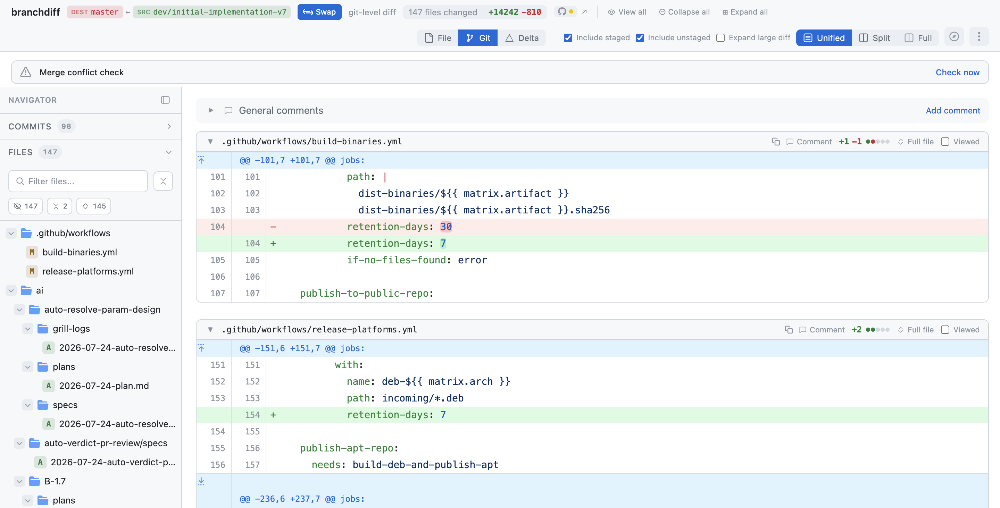
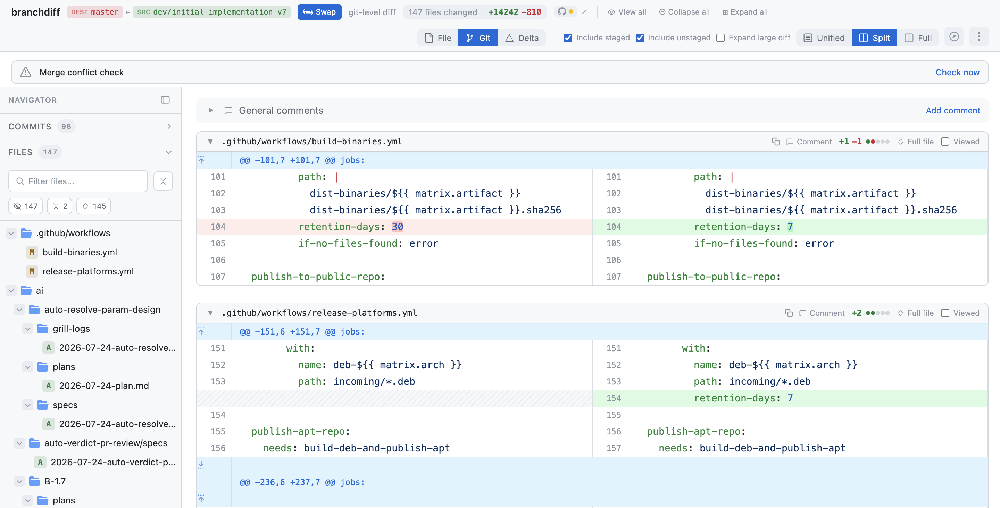
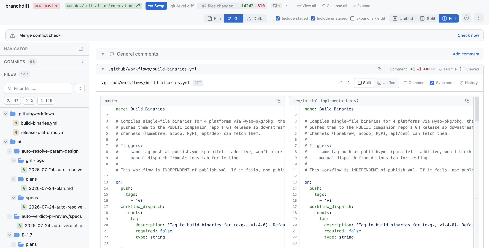

The local diff cockpit.
Read the whole file, fly through it with vim keys, and filter 147 files down to the seven that matter — instead of scrolling fifty disconnected three-line hunk windows.
b1 master
b2 dev/initial-implementation-v7
147 files changed
localhost:5391
02 · the problem
GitHub's hunk view rips the code out of context.
- Fifty disconnected three-line windows. A refactor PR becomes a pile of fragments — you can't see the surrounding function.
- Mouse-heavy. Every action is a click and a scroll; reviewing 40 files by hand is exhausting.
- Two forges, two UIs. Engineers who straddle GitHub and Bitbucket learn two different diff tools.
- A flat file list. No way to narrow to "files I haven't looked at that also have comments."
The result: small frictions that cause engineers to put review off until Friday afternoon — or ship an "LGTM" written out of exhaustion.
03 · the solve
One local page that renders the whole file, in place.
branchdiff reads the diff from disk and renders it in your browser in milliseconds — identical on GitHub and Bitbucket, with every hunk shown in its surrounding code.
3
View modes
Unified, split, full-file
150+
Languages
Shiki syntax highlighting
0
Cloud round-trips
Reads from disk
One UX across both forges — the same keystrokes, the same toolbar, the same sync flow whether your PR lives on GitHub or Bitbucket.
04 · comparison modes
Three ways to compare — git, file, and delta.
- git mode (default): git diff b1..b2 — two-dot, tip-vs-tip commit ancestry.
- file mode: compares actual content at each tip. Identical content = no diff — even after a rebase or cherry-pick that produced phantom changes on GitHub.
- delta mode: surfaces where git and file disagree — git-only (amber), file-only (blue), shared — catching silent merge-conflict resolutions git misses.
Why it matters: after a rebase, GitHub often shows a "change" where both branches contain identical content. File mode shows nothing — and you stop reviewing phantom diffs.
05 · unified view
Unified — the full file with every hunk in place.

master ↔ dev/initial-implementation-v7 · 147 files · sidebar with Files / Commits tabs
06 · split view
Split — old beside new.

Side-by-side view · one toggle away
07 · full-file compare
Full — the entire file, with a minimap.

Full-file compare · both sides rendered in full
- The whole file, not just hunks — see surrounding code and patterns at a glance.
- Minimap strip with red/green markers for changed regions; click to jump.
- Markdown preview — render both sides as formatted markdown for docs PRs.
- Per-pane copy buttons and a widened 1800px dialog (v1.7.0).
08 · sidebar & filters
Nine stacking filters — 147 files → 7.

Commented · Uncommented · Viewed · Unviewed · Stale · Collapsed · Expanded · Staged · Unstaged
- Filter Stale + search auth → exactly the auth files that changed since you last looked.
- File-row status badges: S staged, U unstaged, amber dot stale, ✓ viewed.
- Right-click a folder → view / unview / expand / collapse all under it.
- Collapse-all keeps files with open threads force-expanded.
Filters auto-hide when they don't apply — no noise.
09 · keyboard
Review without leaving the keyboard.
jk next / prev file
np next / prev hunk
usf unified / split / full
x collapse file
⇧X collapse all
r toggle viewed
/ focus search
? shortcuts
Auto-advance: marking a file viewed or collapsing it scrolls to the next file — walk through the PR file by file.
10 · performance
Smooth on thousand-file diffs.
150+
rows
virtualization threshold (files, commits, blame)
500
lines
large-diff gating threshold
∞
blame
virtualized, no line cap
File, commit, and blame lists virtualize past a few hundred rows; diff hunks gate at 500 lines so the tab never crashes on a massive PR. v1.7.0 switched to per-item absolute positioning — wrong height estimates no longer displace later rows, killing the blank-gap jank during fast scroll.
11 · recap
The cockpit, in one line.
Whole-file context, three comparison modes, nine stacking filters, vim keys, and virtualized lists — all local, identical on both forges.
- Unified / split / full-file views with minimap & markdown preview.
- git / file / delta comparison modes — no more phantom diffs.
- 147 files filtered to the seven that need attention now.
- Keyboard-first; auto-advances as you review.